CSS Shapes се използват за обвиване на съдържание около дефинирани от програмиста линия.
Линиите се дефинират с функции като circle(), ellipse(), inset() или polygon() и се позиционират във виртуална кутия, която се нарича Reference Box.
За тази кутия ще има подробно описание след малко.
CSS Shapes е стандардт, който позволява за създаването на форми, които както беше споменато преди
позволява съдържанието на уеб страници (най-често текст) да следват външните контури.
Подобна техника се използва при създаването на списания, където има много текст.
Преди да се въведат CSS Shapes, беше почти невъзможно да се създаде подобно оформление. Повечето дизайни са били съставени прави линии, редове колони.p>
Малко повече за Reference Box
Reference box дефинира координатната система на формите.
Така тази кутия въздейства върху това как дадена форма ще бъде нарисувана и позиционирана.
Има 4 различни вида: margin-box, padding-box, border-box и content-box. Всяка от тях възпроизвежда леко различни резултати. По подразбиране се използва
margin-box. На фиг(/placeholder number/) долу е показано как изглеждат тези кутии.
ВАЖНО: Цифрите към фигурите ще бъдат актуализирани при финалната версия!
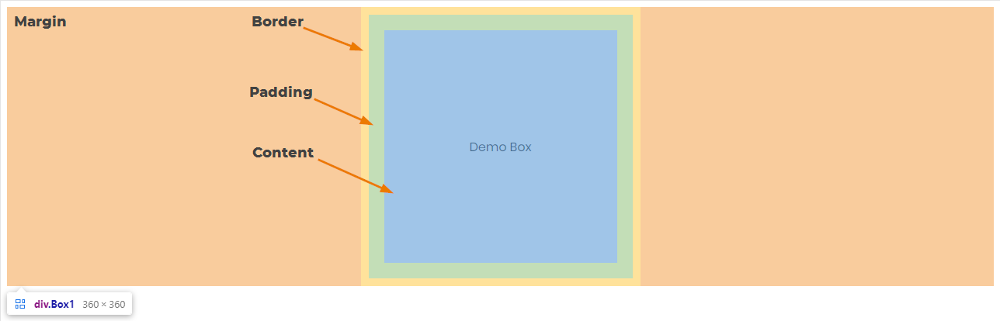
Фигура 1. Демонстрация на Reference Box
Как reference box влияe върху формите
След като имаме добра представа за това какво е Reference Box,
може да се види как тя влияе върху формите, които ползваме. В следващите примери може да видим какви резултати
различните кутии дават в сравнение с обикновената форма
(обикновена в този случай се подразбира като кутия, която използва margin-box но без допълнителен margin)
За примерите с формите, ще се използва същата кутия от обяснението на Reference Box. Тук "Demo Box" има размери 300х300 px.
Този размер се отнася към "content box". Това означава, че при "margin: 0 auto" размерът на кръга е 300х300 px
Детайлите са как се създава формата, ще бъдат покрити в следващите секции.
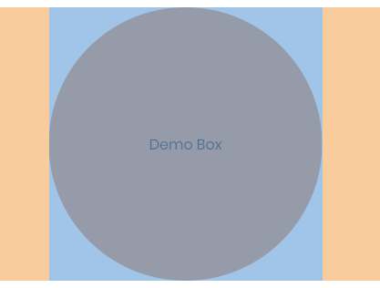
Фигура 2. Кръг, само с "margin: 0 auto"
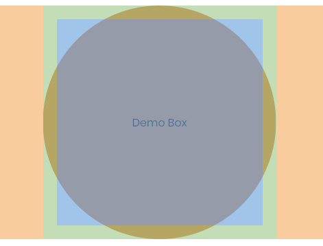
Фигура 3. Кръг, с "margin: 0 auto, padding 20px"
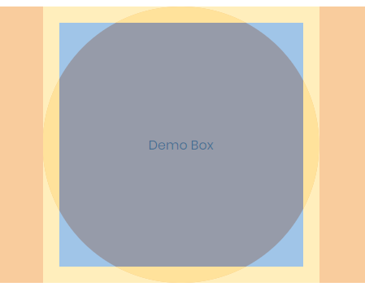
Фигура 4. Кръг, с "margin: 0 auto, border 20px"
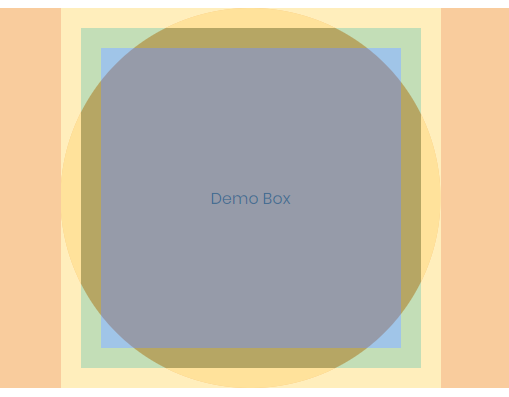
Фигура 5. Кръг, с "margin: 0 auto, border 20px"
Следващата фигура, показва какво се получава ако цветът на border е различна от background-color.
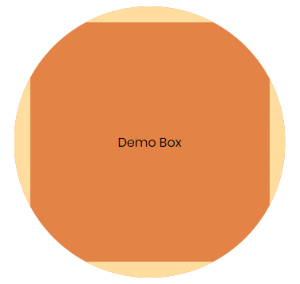
Фигура 6. Кръг, с "margin: 0 auto, border 20px"
Как се използват
Кратка документация
Тази секция разглежда различните форми които се поддържат, как да се използат както и няколко примера.
Когато първите четири аргумента се използват, top, right, bottom и left офсети от
reference box навътре дефинират ъглите на вградения правоъгълник.
Аргументите следват синтаксиса на margin shorthand, който ти позволява да
дефинираш 4 instests с една, две или четири стойности.
shape-radius представлява r - радиуса на кръга. Отрицателни стойности не са валидни.
Процентна стойност се изчислява от широчината и височината на reference box: sqrt(width2+height2)/sqrt(2)
position аргументът дефинира центъра на кръга. По подрабиране е център ако този аргумент е пропуснат.
shape-radius аргументите представляват rx и ry, радиусите за оста х и оста у на елипсата в тази последователност.
Отрицателни стойности са невалидни. Процентните стойности се изчислват спрямо ширината (стойността на rx) и височината (стойността на ry).
на reference box.
position аргументът дефинира центъра на елипсата. По подрабиране е център ако този аргумент е пропуснат.
<'fill-rule'> - Правилото за запълване се използва да се установи вътрешността на полигона.
Погледнете SVG fill-rule
Възможни за стойности които са
nonzero
или
evenodd
.
Всеки чифт ардументи в списъка представляват xi и yi - х и у координати на i-тия връх на полигона.
Примери с код
inset()
One November night in the year 1782, so the story runs, two brothers sat over their winter fire in the little French town of Annonay, watching the grey smoke-wreaths from the hearth curl up the wide chimney. Their names were Stephen
and Joseph Montgolfier, they were papermakers by trade, and were noted as possessing thoughtful minds and a deep interest in all scientific knowledge and new discovery. Before that night—a memorable night, as it was to prove—hundreds of
millions of people had watched the rising smoke-wreaths of their fires without drawing any special inspiration from the fact.
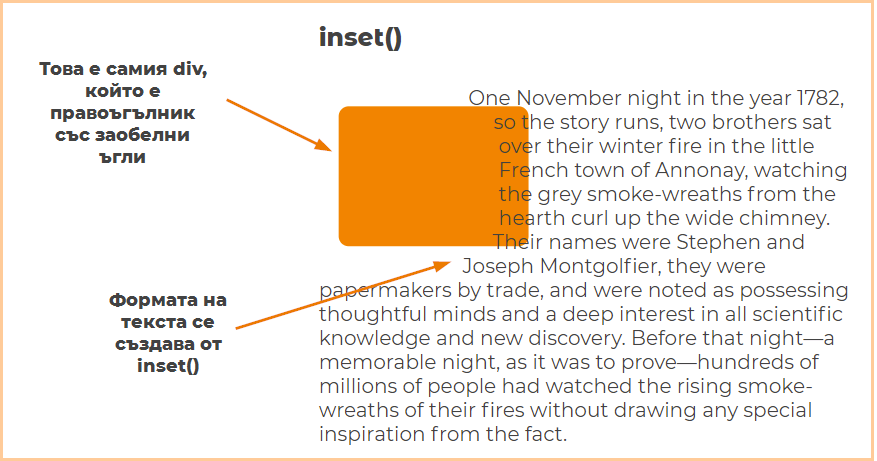
Фигура 7. div, който се вижда направен със CSS
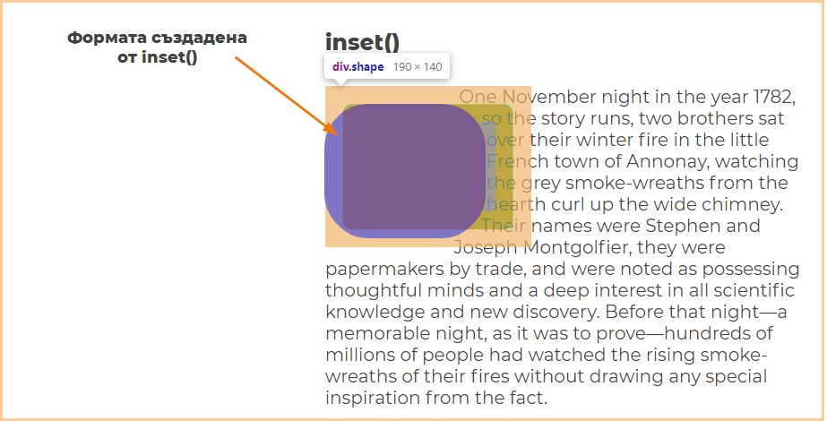
Фигура 8. Формата създадена от inset(), която кара текста да има форма.
circle()
One November night in the year 1782, so the story runs,
two brothers sat over their winter fire in the little French
town of Annonay, watching the grey smoke-wreaths from the hearth
curl up the wide chimney. Their names were Stephen
and Joseph Montgolfier, they were papermakers by trade, and
were noted as possessing thoughtful minds and a deep interest
in all scientific knowledge and new discovery. Before that
night—a memorable night, as it was to prove—hundreds of
millions of people had watched the rising smoke-wreaths of their f
ires without drawing any special inspiration from the fact.
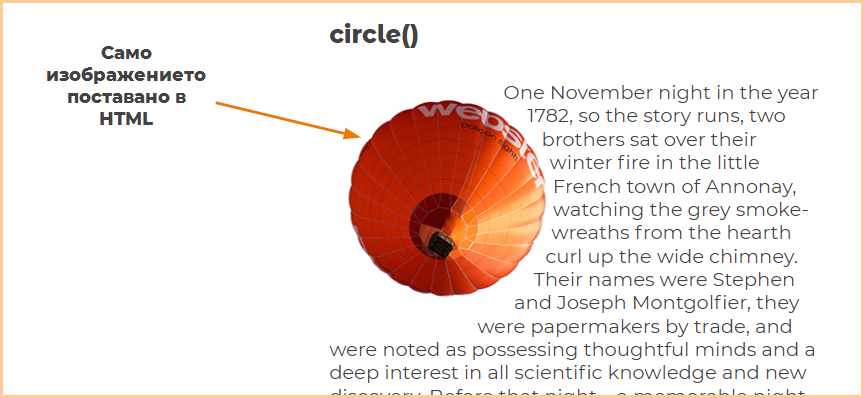
Фигура 10. Изображението, сложено в HTML кода.
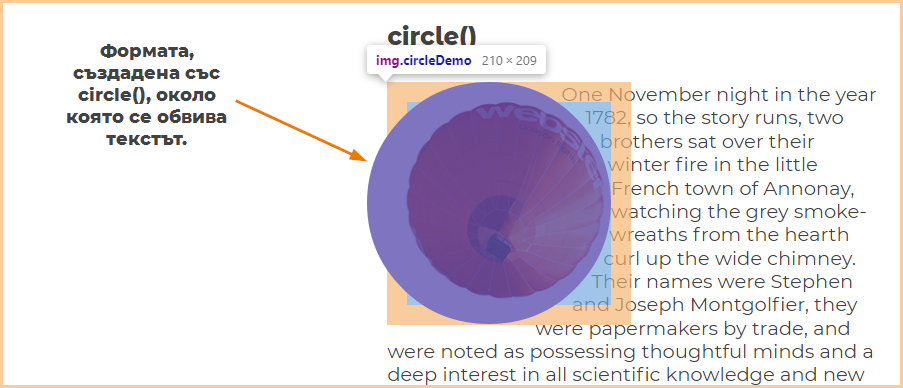
Фигура 10. Формата създадена от circle(), която кара текста да има форма.
ellipse()
Елипсата се съдава по същия начин като кръга, но с малко по-различни аргументи
One November night in the year 1782,
so the story runs, two brothers sat over their
winter fire in the little French town of Annonay,
watching the grey smoke-wreaths from the hearth curl
up the wide chimney. Their names were Stephen
and Joseph Montgolfier, they were papermakers by trade,
and were noted as possessing thoughtful minds and a deep
interest in all scientific knowledge and new discovery.
Before that night—a memorable night, as it was to prove—hundreds of
millions of people had watched the rising smoke-wreaths of
their fires without drawing any special inspiration from the fact.
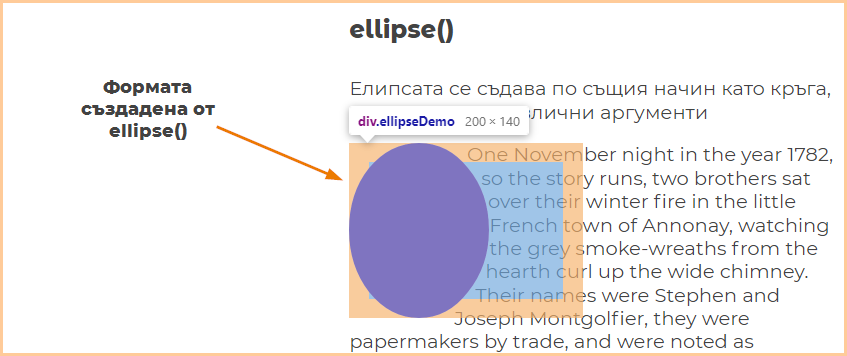
Фигура 11. Формята, която кара тексът да има форма.
polygon()
One November night in the year 1782, so the story runs,
two brothers sat over their winter fire in the little
French town of Annonay, watching the grey smoke-wreaths
from the hearth curl up the wide chimney. Their names were
Stephen and Joseph Montgolfier, they were papermakers by trade,
and were noted as possessing thoughtful minds and a deep interest
in all scientific knowledge and new discovery. Before that night—a
memorable night, as it was to prove—hundreds of millions of people had
watched the rising smoke-wreaths of their fires without drawing any special
inspiration from the fact.
Clippy e много полезен инстурмент, който помага за създаването на полигони. Както беше показано в
примерния код, за да се дефинира полигон трябва да се добавят всички въхове. Това е доста трудно да се направено
на сляпо без да знае човек какво всъщност прави.
Clippy позволява да се дефинират върховете на полигона и генерира CSS кода, който създава този полигон.
Firefox също има подобна функционалност, която е вградена
в браузъра. За да се използва трябва да се отиде в "inspect mode" и после да се се
използва shape editor.
Този редактор работи за всики форми, които са
описании в този реферат.